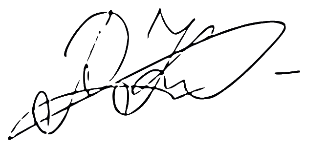

Proactive and resourceful Data Scientist fighting and preventing fraud in Microsoft products. Always eager to utilise my technical knowledge and skills to deliver actionable insights and translate them into concrete business initiatives.
January 2022 - Present
April 2021 - December 2021
May 2018 - July 2019
September 2017 - May 2018
September 2019 - June 2021
July 2020 - Present
October 2019 - June 2020
September 2015 - June 2019
+372 5192 4668
kononov.r97@gmail.com